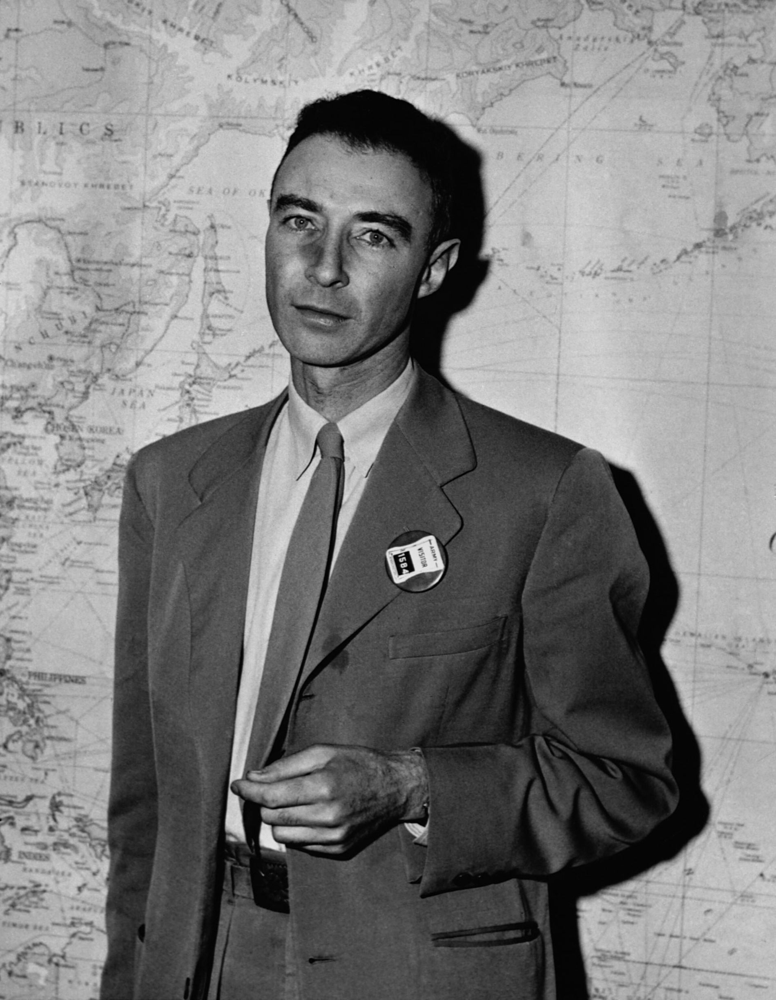

Física
Contribuiu para o desenvolvimento da física teórica e para a formação de novos pesquisadores.
Foi um físico teórico americano conhecido como o "PAI DA BOMBA ATÔMICA".
Ele liderou o Laboratório de Los Alamos durante o Projeto Manhattan, na Segunda Guerra Mundial, onde coordenou uma equipe de cientistas responsáveis pelo desenvolvimento da primeira bomba atômica.
O primeiro teste nuclear da história, chamado Trinity, foi realizado em 16 de julho de 1945.
Após a guerra, Oppenheimer passou a defender o controle das armas nucleares e se opôs ao desenvolvimento da bomba de hidrogênio.
Durante a Guerra Fria, enfrentou perseguição política e, em 1954, perdeu seu acesso a informações confidenciais do governo.
Além de seu trabalho no Projeto Manhattan, também contribuiu para áreas como mecânica quântica, física de partículas e astrofísica.

O Projeto ManhattanDiretoria de Los Alamos: Liderou a base secreta no Novo México que reuniu os maiores cientistas da época para criar a arma nuclear antes da Alemanha nazista.Teste Trinity: Em 16 de julho de 1945, a primeira bomba atômica foi detonada com sucesso.A frase famosa: Ao ver o poder da explosão, relembrou o texto sagrado hindu Bhagavad Gita: "Agora eu me tornei a morte, o destruidor de mundos".
| Fato | Descrição |
|---|---|
| Nacionalidade | Nasceu nos EUA em 1904 |
| Interesses | Arte e poesia |
| Gostos | Cavalos, caminhasdas e tempo no deserto |
Deixe sua opinião sobre Oppenheimer
Biografia, trajetória e importância histórica
Julius Robert Oppenheimer foi um físico teórico norte-americano que teve um papel importante no desenvolvimento das primeiras armas nucleares durante a Segunda Guerra Mundial.
Ele ficou conhecido principalmente por ter sido o diretor científico do Laboratório de Los Alamos, responsável pela parte científica do Projeto Manhattan.
Sua história também ficou marcada pelas discussões sobre ciência, guerra, responsabilidade e os efeitos das armas nucleares na sociedade.
J. Robert Oppenheimer
J. Robert Oppenheimer nasceu no dia 22 de abril de 1904, em Nova York, nos Estados Unidos. Desde jovem demonstrou interesse por ciência, literatura e filosofia.
Estudou na Universidade Harvard e posteriormente foi para a Europa, onde continuou seus estudos em física. Na Universidade de Göttingen, na Alemanha, realizou seu doutorado sob orientação de Max Born.
Depois de retornar aos Estados Unidos, passou a trabalhar como professor e pesquisador. Com o início da Segunda Guerra Mundial, foi escolhido para participar do Projeto Manhattan.
Oppenheimer estudou química e posteriormente se interessou cada vez mais pela física. Sua passagem pela Alemanha foi importante para sua formação como físico teórico.
| Informação | Detalhes |
|---|---|
| Nome completo | Julius Robert Oppenheimer |
| Nascimento | 22 de abril de 1904 |
| Local de nascimento | Nova York, Estados Unidos |
| Profissão | Físico teórico |
| Principal projeto | Projeto Manhattan |
| Falecimento | 18 de fevereiro de 1967 |
O Projeto Manhattan foi um programa secreto desenvolvido durante a Segunda Guerra Mundial com o objetivo de produzir armas nucleares.
Em 1942, Oppenheimer foi escolhido para dirigir o laboratório de Los Alamos, no Novo México, onde vários cientistas trabalharam no desenvolvimento das armas.
Em 16 de julho de 1945, foi realizado o primeiro teste nuclear da história, no deserto do Novo México.
Primeiro teste de uma arma nuclear realizado na história.
Após a Segunda Guerra Mundial, Oppenheimer participou de debates relacionados ao uso e ao controle das armas nucleares.
Durante a década de 1950, sua carreira foi afetada por questões políticas relacionadas à segurança nacional dos Estados Unidos.
Oppenheimer é lembrado por suas contribuições para a física e por sua participação no desenvolvimento da primeira bomba atômica.
Contribuiu para o desenvolvimento da física teórica e para a formação de novos pesquisadores.
Foi diretor científico do laboratório de Los Alamos.
Sua história ampliou as discussões sobre as consequências do uso da ciência em guerras.
Nascimento de Robert Oppenheimer.
Conclui sua graduação em Harvard.
Conclui seu doutorado em Göttingen.
Assume a direção científica de Los Alamos.
É realizado o teste nuclear Trinity.
Oppenheimer falece aos 62 anos.